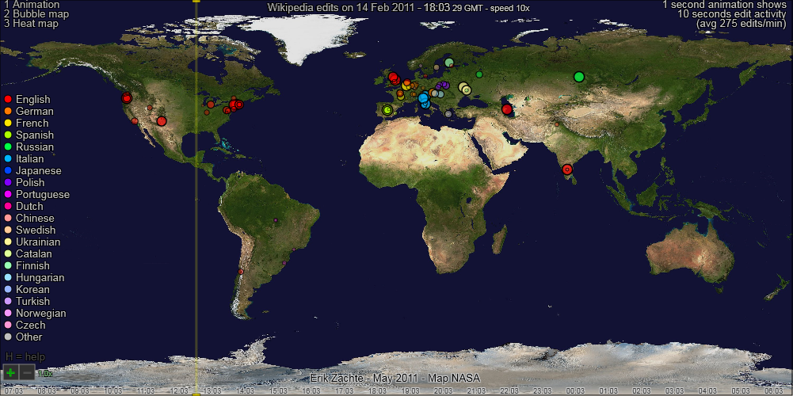
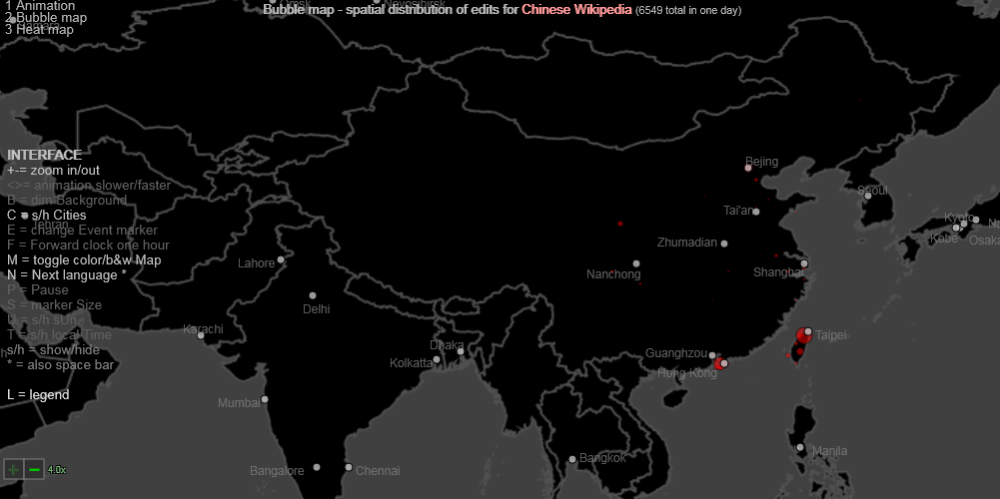
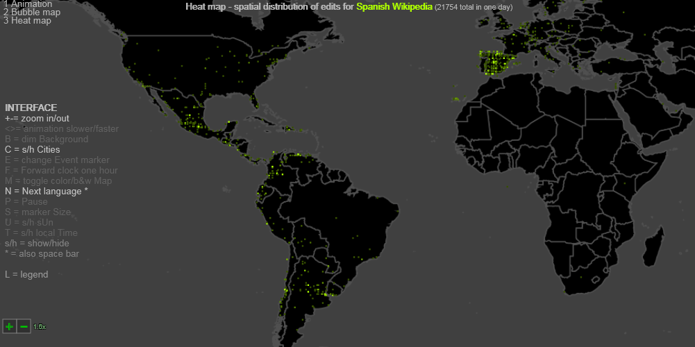

Wikipedia edits for a normal day in May 2011 (Beta)
>>> Animation <<<
Prepare for large download (3 Mb), no progress bar.Tested on newest Windows browsers Firefox, Chrome, Safari, MSIE, Opera.
Speed and minor rendering issues may differ per browser.
Screenshots




Author: Erik Zachte (see also my
other animation about Wikipedia and sister projects.